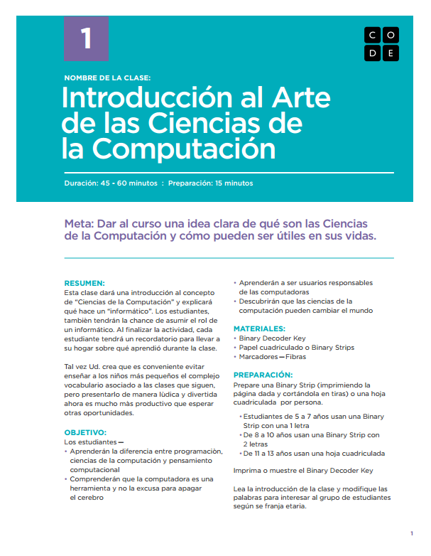
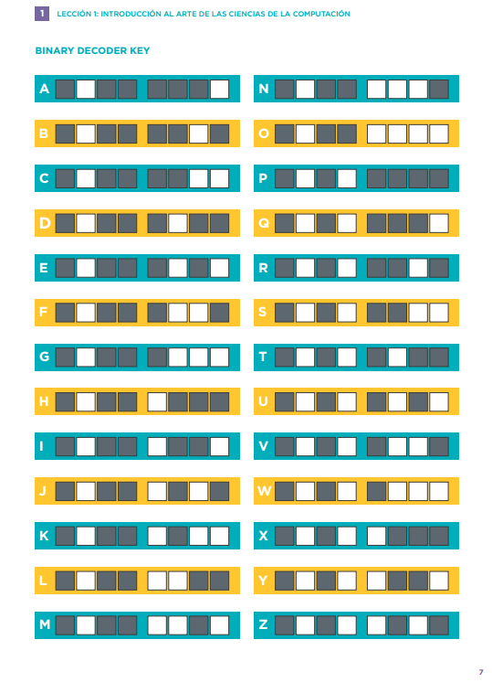

3. Actividades fuera de línea
A continuación comentaremos un recurso muy interesante y que puede pasar desapercibido en un primer vistazo rápido a la plataforma. Cuando estamos realizando nuestro curso como alumnos, ciertas etapas se componen únicamente de una única Actividad fuera de línea.
A simple vista, se trata de un vídeo introductorio que podemos incluso descargar. Presta atención a los botones...:
- ¡Acabado! Sigue a la siguiente etapa. Nos llevará al primer puzzle de la siguiente etapa y, lo que es más importante, ¡guardará esta actividad fuera de línea como realizada! Si solo vemos el vídeo pero no clicamos aquí, no se guardará nuestro progreso para esta actividad.
- Abrir la planificación de la lección. Se trata de un documento en .pdf en el que se nos propone una actividad sin ordenadores que trabaja los conceptos que se verán en los siguientes puzzles. Cuenta con materiales para el maestro y para el alumno. Es un recurso muy interesante que facilita la conexión del pensamiento computacional con situaciones de la vida cotidiana, más allá del mundo informático. Puedes ver un ejemplo aquí. Estos contenidos sí que están en español.

